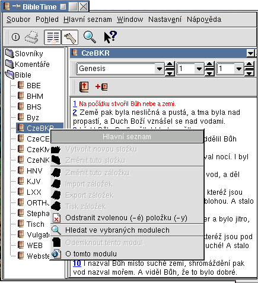
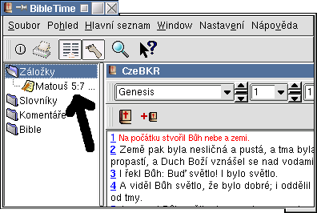

| Předcházející | Kapitola 3. Ovládání programu | Další |
Pro zobrazení dokumentu jednodu¹e kliknìte na pøíslu¹nou skupinu (Bible, Komentáøe nebo Slovníky) a uká¾e se vám obsah skupiny. Kliknutím na po¾adovaný dokument otevøete okno s jeho textem.

 | Funguje zde "táhni a pus»" (Drag & Drop) |
Dokument je mo¾né otevøít i pomocí ji¾ otevøeného dokumentu. Jednodu¹e najeïte my¹í na èíslo ver¹e, který vás zajímá, a pøetáhnìte toto èíslo do Hlavního seznamu. Upus»te jej nad modulem, který chcete otevøít a on se zobrazí pøesnì na potøebném ver¹i. Èíslo ver¹e mù¾ete pøetáhnout i do okna ji¾ otevøeného dokumentu, který se tak pøepne na tento ver¹. Toto chování funguje pouze pro moduly Biblí a komentáøù.
Dal¹í dvì funkce jsou dostupné kliknutím pravým tlaèítkem my¹i na jméno modulu v Hlavním seznamu. Volba "O tomto modulu" otevøe okno s copyrightem a dal¹ími souvisejicími informacemi o modulu. Dal¹í volba "Odemknout tento modul" je dostupná jen pro zamèené moduly. Otevøe se malé okénko a pokud máte odblokovací klíè, mù¾ete zamèený modul odemknout a uèinit èitelným. Crosswire Bible Society musí zamykat moduly, dokud vlastníci práv nedovolí volnou distribuci modulu nebo dokud nevypr¹í copyright. Informace o zamèených modulech naleznete na stránkách Crosswire Bible Society.
Hledat v modulu mù¾ete pomocí pravého tlaèítka menu a zvolením "Hledat ve vybraných modulech". Kliknutím s klávesou SHIFT nebo CTRL mù¾ete vybrat více ne¾ jeden modul. Vyhledávací okno pak otevøete stejným zpùsobem. Hledání bude probíhat ve v¹ech tìchto dokumentech.

| Funguje zde "táhni a pus»" (Drag & Drop) |
Kliknìte pravým tlaèítkem my¹i do prázdné èásti Hlavního seznamu a vyberte "Vytvoøit novou slo¾ku". Takto si vytvoøte slo¾ku pro zálo¾ky. Pomocí vlastnosti "táhni a pus»" (drag & drop) mù¾ete jednodu¹e pøetahovat odkazy z výsledku hledání do této slo¾ky zálo¾ek a pøemís»ovat zálo¾ky mezi slo¾kami. Je také dostupná mo¾nost importu/exportu zálo¾ek. Kliknìte pravým tlaèítkem a vyberte "Export zálo¾ek". Otevøe se okno, ve kterém si zvolíte soubor, do kterého se mají zálo¾ky exportovat. Takto je pak mù¾ete sdílet s ostatními u¾ivateli, zálohovat a pod. Stejným zpùsobem mù¾ete zálo¾ky importovat. Pøes pravé tlaèítko mù¾ete navíc mìnit jméno slo¾ky a popis zálo¾ky, mazat slo¾ky i zálo¾ky.

| Předcházející | Domů | Další |
| Ovládání programu | Nahoru | Okno MDI |